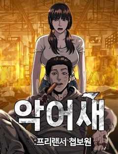
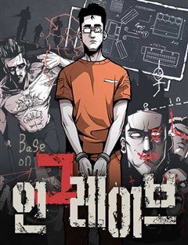
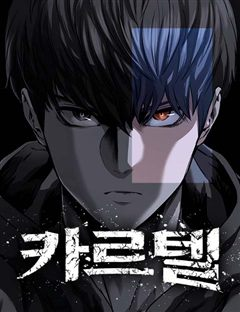

백XX 같은 웹툰 추천

백XX · 병장 / 박만사 / 펀치킥
백XX 재밌게 봤다면 이 웹툰들도 좋아할 거예요. 같은 장르이면서 느와르, 범죄, 시리어스 같은 요소가 겹치는 작품을, 겹치는 요소가 많은 순서로 20개 골랐어요.
2026-10-03 기준 · 네이버웹툰·카카오웹툰·레진코믹스 · 성인 작품 제외
내 취향으로 직접 골라 추천받기 →-
1
 네이버웹툰
네이버웹툰김부장
“제발 안경 쓴 아저씨는 건들지 말자…” 오직 자신의 딸 '민지'를 위해 특수요원직을 관두고 평범함을 선택한 가장 김부장. 그러던 어느 날 민지가 소리소문 없이 사라지고, 김부장은 자신을 감시하는 국가를 적으로 돌리면서까지 딸을 찾아나서기 시작하는데…
느와르범죄시리어스가족액션네이버웹툰에서 보기 → · 김부장 같은 웹툰 → -
2
 네이버웹툰
네이버웹툰킬러 배드로
배신당한 노인킬러 회춘하다! 그런데... 아무도 날 못 알아봐?! "그럼 내가 최강이지!"
느와르범죄시리어스먼치킨액션네이버웹툰에서 보기 → · 킬러 배드로 같은 웹툰 → -
3네이버웹툰
오브차카
러시아 마피아 빅 보스의 피습. 권력을 노린 배신이 조직을 무너뜨린다. 오브차카 보리스는 친우의 피 앞에서 복수를 선택한다. [백XX]의 첫 공식 스핀오프.
느와르범죄시리어스복수극액션네이버웹툰에서 보기 → -
4
 네이버웹툰
네이버웹툰소년교도소
조폭인 아버지를 식물인간으로 만들어 소년교도소에 수감된 ‘차주영’. 얼마 뒤, 깨어나지 못할 거라 여겼던 아버지가 찾아와 말한다. “아들아, 내가 너의 소꿉친구를 죽였다” 그런 아버지에게 복수할 방법은 단 하나 ‘이 교도소를 장악하는 것’
느와르범죄가족복수극액션네이버웹툰에서 보기 → -
5

네이버웹툰첩보원 악어새
베일에 싸인 조직, 국정원 산하 민간 첩보기관 ‘악어’. 그곳에서 활동하는 프리랜서 첩보원, ‘코드네임 악어새’. 아버지를 죽이고 조직을 집어삼키려는 국정원에 맞서 싸워라!
범죄자극적인먼치킨복수극액션네이버웹툰에서 보기 → -
6

네이버웹툰인그레이브
갱단과의 전쟁이 끊이질 않던 국가 “산 로메리아”에서 누명을 쓰고 억울하게 옥살이를 하게 된 주인공 “니콜”. 그는 악명 높은 갱단을 수용하기 위해 신설된 범죄자 도축장, “크라네오 교도소”에 투옥된다. 지옥같은 교도소 생활에서 니콜은 점점 죄의식에…
느와르범죄시리어스액션네이버웹툰에서 보기 → -
7
 네이버웹툰
네이버웹툰불꽃
카지노, 주류, 건설, 대부업까지 하나로 묶어놓은 (주)운중의 초대회장 이운일, 그리고 그의 후계자 이주화 회장. 한 날 한 시에 떠나버린 두 부자의 갑작스러운 죽음으로 운중의 이권다툼이 시작된다. 회사의 이권다툼에 정면으로 나선 운중의 실장 남대균…
느와르시리어스먼치킨액션네이버웹툰에서 보기 → -
8

네이버웹툰카르텔
가장 낙후된 동네에 혼자 남게 된 소년, 원도윤. 재능은 있었지만 세상은 그를 끌어내렸다. 거대 조직이 쥐고 흔드는 세상에서는 위로 오를수록 더 깊이 빠진다는 것을 깨닫는다. 원도윤은 끝내 선택한다. 정상 대신 나락을. 그리고 스스로 카르텔의 중심에…
느와르범죄복수극액션네이버웹툰에서 보기 → -
9
 네이버웹툰
네이버웹툰입학용병
어린 시절 비행기 추락 사고의 유일한 생존자 유이진. 살아남기 위해 용병으로 살아가던 유이진은 10년 후, 가족이 있는 고향으로 돌아왔다.
느와르가족먼치킨액션네이버웹툰에서 보기 → · 입학용병 같은 웹툰 → -
10
 네이버웹툰
네이버웹툰킬러경찰
조직의 배신으로 죽게 된 전설의 킬러 ‘비광’, 경찰 ‘김경수’의 몸으로 환생한 그는 자신을 배신했던 킬러조직 화국사에게 복수를 다짐한다.
느와르먼치킨복수극액션네이버웹툰에서 보기 → -
11
 네이버웹툰
네이버웹툰레드셔츠
킬러 회사의 전설, 차시혁. 사랑하는 여자를 만나 은퇴를 결심하지만, 회사는 그를 쉽게 놔줄 생각이 없었다. 결국, 그의 모든 것을 앗아가기 시작하고, 차시혁은 다시 칼을 든다. 복수가 시작되고, 거대한 조직 ‘네빌가’와의 전쟁도 피할 수 없게 되는…
느와르먼치킨복수극액션네이버웹툰에서 보기 → -
12
 네이버웹툰
네이버웹툰붉은 이정표
세상의 평화를 유지하던 최강의 도깨비 집단 '홍혜.' 그러던 어느 날 동료의 배신으로 도깨비 '린'은 홍혜와 친구들 모두를 잃게 된다. 분노로 가득 찬 그는 홍혜의 최강전력 '검은 귀신' 으로서 복수를 향해 길을 떠난다.
시리어스먼치킨복수극액션네이버웹툰에서 보기 → -
13
 네이버웹툰
네이버웹툰사형집행관
히어로 시절에 죽이지 못하고 감옥에 수감시켜 놓았던 빌런들. 이제는 교도관이 되어 자신의 손으로 사형을 집행한다.
자극적인먼치킨복수극액션네이버웹툰에서 보기 → -
14
 카카오웹툰
카카오웹툰악어
19세의 나이, 살인을 저지르고 10년의 수형 생활을 마친 정인후. 출소 후 삶을 꿈꾸지만 현실을 쉽지않다. 그러던 어느 날, 과거 자신이 죽인 김상철의 아내 윤진희가 찾아와 아들 김루환의 경호를 제안한다.
느와르자극적인액션카카오웹툰에서 보기 → -
15
 네이버웹툰
네이버웹툰히어로 킬러
전쟁은 빌런들의 패배로 막을 내렸다. 이제 세상은 부패한 히어로들이 지배하고 있다. 그리고, 그런 히어로들 중 하나가 이화의 언니를 죽였다. 언니를 죽인 게 누구인지는 모르지만 상관없다. 한 놈씩 죽이다 보면 그중에 있을 테니까. 이화는 매일 밤 영…
범죄자극적인액션네이버웹툰에서 보기 → · 히어로 킬러 같은 웹툰 → -
16
 네이버웹툰
네이버웹툰천마육성
마교의 태왕각주 ‘사마귀’의 명령으로 화산파 출몰 지역으로 파견나간 비객조. ‘설휘’는 화산파의 절대고수 ‘구종명’에게 죽임을 당할 위기에 처한다. 그때 눈 앞에 상태창이 나타나고 정찰 임무를 받기 직전으로 회귀하게 된다. 설휘는 자신이 전생에서 죽…
시리어스자극적인먼치킨액션네이버웹툰에서 보기 → · 천마육성 같은 웹툰 → -
17
 네이버웹툰
네이버웹툰좀비묵시록 82-08
탕-! 의문의 선박 속 '그것'으로부터 시작된 괴이한 전염병은 서울을 죽음의 도시로 만들어버린다. 예고 없이 닥쳐온 심판의 그날부터 세상의 모든 질서는 완전히 리셋되었다. 처절한 생존 경쟁 속에서 프로젝트명 [좀비묵시록 82-08]이 시작된다.
시리어스자극적인액션네이버웹툰에서 보기 → -
18
 네이버웹툰
네이버웹툰국정원 말단직원
시험 없이 7급 공무원 되는 개꿀팁! 추천으로 군 복무 중 '국정원 특채'되기..! 그렇게 난 세계의 화약고 중국 단둥시에서 집에 앉아 압록강 철교를 감시하는 임무를 맡았다. 하지만 500만 원짜리 야간 근무를 기점으로 내게 자꾸 여러 나라가 엮이는…
범죄먼치킨액션네이버웹툰에서 보기 → -
19

-
20
 네이버웹툰
네이버웹툰사채지간
냉혈한 사채업자 김상안. 교사였던 여동생이 학생들의 괴롭힘으로 스스로 목숨을 끊자, 그 목숨 값을 받기 위해 가해학생들의 담임이 된다. 지옥에 떨어져도 빚은 받아내는 사채업자와 악마 같은 학생들의 지독한 사제지간.
느와르복수극액션네이버웹툰에서 보기 →